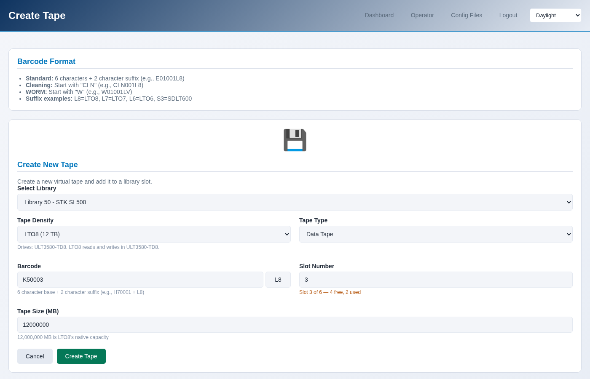

Creating tapes
A tape is a barcode, a size, and a generation. Creating one writes its files
under /opt/mhvtl and puts it in a free slot of a library.
The barcode decides the generation
A barcode is a prefix, a number and a two-character suffix: K50001L8 is
K50 + 001 + L8. The suffix is not decoration - it is how MHVTL
knows what the cartridge is, and therefore which drives can load it.
L5toL9LTO-5 to LTO-9
LALTO-10
JC,JDIBM 3592
S3T10000
Which ones this library’s drives take:
$ sudo mhvtl tape media 50
Drives: ULT3580-TD8, ULT3580-TD8
DENSITY SUFFIX USE IN DRIVES
------- ------ ---------- -----------
LTO8 L8 read/write ULT3580-TD8
LTO7 L7 read/write ULT3580-TD8
Default for new tapes: LTO8
A drive reads older generations and writes recent ones, exactly as the real hardware does. Making an LTO-5 cartridge for an LTO-8 drive is allowed - that drive can read it - but nothing will write to it.
One tape
Operator → Create Tape, or Tapes → Create a tape on the library page.
The form proposes the next free barcode in the series this library already uses, so tapes stay in one run rather than becoming a scatter of prefixes.
{kind=link}

$ sudo mhvtl tape next-barcode 50
K50003L8
$ sudo mhvtl tape create 50 K50003L8
Created K50003L8 in slot 3 of library 50
Restart the library for its robot to see this: mhvtl service restart --library 50
Option |
What it does |
|---|---|
|
Which slot to put it in; the first free one if omitted |
|
Capacity in MB. The default is large; a small tape is better for testing, because filling it is the interesting part |
|
LTO8, LTO7 … read from the barcode suffix if omitted |
|
|
A run of tapes
Tapes → Create a run makes several at once, numbered in sequence.
$ sudo mhvtl tape bulk 50 10 --prefix K50 --suffix L8 --start 3
Created 10 of 10 tapes in library 50
Restart the library for its robot to see this: mhvtl service restart --library 50
The count stops at the free slots: a library with four empty slots takes four tapes. Add more room first if you need it (see below).
Size, and why it matters
The default size is large enough that nothing fills it, which is right for using a library and wrong for watching one. A tape the size of what you are about to write shows the interesting part - the drive reporting how full it is, the bar filling up, the end of tape.
$ sudo mhvtl tape create 50 K50004L8 --size-mb 480
Room for more tapes
A library has a fixed number of slots, and only the empty ones can take a new tape. Empty slots on the library page changes that, and so does:
$ sudo mhvtl tape slots 50
total slots 6
full slots 2
empty slots 4
map slots 4
drives 2
cleaning tapes 0
$ sudo mhvtl library slots 50 --add 4 --restart
$ sudo mhvtl library slots 50 --empty 10 --restart
Adding slots edits library_contents.50, which MHVTL reads once when the
library starts - so the robot does not see the new slots until it restarts.
--restart does that for you; without it, the console and the command line
both say the restart is owed.
Shrinking only removes empty slots after the last tape; it never removes a slot holding one.
Deleting a tape
$ sudo mhvtl tape delete 50 K50003L8
Its media files are kept; `mhvtl tape adopt <library> K50003L8` puts it back.
Removed K50003L8 from slot 3
$ sudo mhvtl tape delete 50 K50003L8 --remove-media # and off the disk
Without --remove-media the files stay on disk and the tape becomes an
orphan, which can be put back later - see Adopting a tape that is already on disk. With it, the data is
gone.